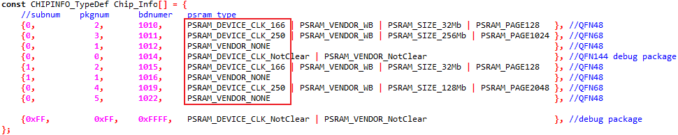
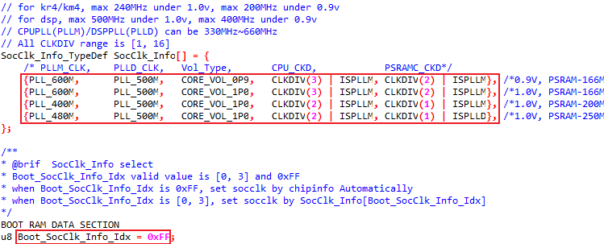
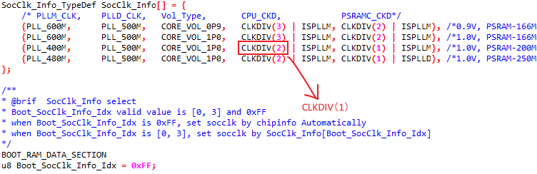
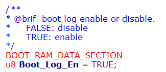
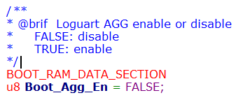

Introduction
This chapter describes the user configurations in the SDK. Users can modify any of them according to the application requirements.
Boot
This section introduces the boot-related configurations including SoC clock switch and boot log.
The KM4 in AmebaLite device boots at 150MHz at the BootROM Stage, and switches to a higher frequency during the Bootloader Stage. There are some limitations when changing the SoC clock.
Clock |
Cut |
Frequency |
Core voltage |
Note |
|---|---|---|---|---|
PLLM |
330MHz ~ 660MHz |
|||
PLLD |
330MHz ~ 660MHz |
Can not exceed the maximum frequency of DSP clock |
||
KM4/KR4 |
A-Cut |
≤200MHz |
0.9V |
|
KM4/KR4 |
A-Cut |
≤240MHz |
1.0V |
|
KM4/KR4 |
B-Cut |
≤300MHz |
0.9V |
|
KM4/KR4 |
B-Cut |
≤400MHz |
1.0V |
|
DSP |
≤400MHz |
0.9V |
The same as PLLD |
|
DSP |
≤500MHz |
1.0V |
The same as PLLD |
SoC Clock Switch
Flow
(Optional) Find out the speed limit of PSRAM device embedded in AmebaLite if not sure.
Print the value of
ChipInfo_BDNum()function, which will get the chip info from OTP.Refer to PSRAM type in
Chip_Info[]in\component\soc\amebalite\fwlib\ram_common\ameba_chipinfo.c.
For example: If bdnumer is 0x1010, the psram can run under 166MHz.
{kind=link}

Check the value of
Boot_SocClk_Info_Idxand the clock info in\component\soc\amebalite\usrcfg\ameba_bootcfg.c.
{kind=link}

If
Boot_SocClk_Info_Idxis not 0xFF, BootLoader will set the SoC clock defined bySocClk_Info[Boot_SocClk_Info_Idx].If
Boot_SocClk_Info_Idxis 0xFF (defult), BootLoader will set the SoC clock automatically according to the PSRAM type embedded in AmebaLite.
For example: If bdnumer is 0x1010, the psram can run under 166MHz, and bootloader will use SocClk_Info[1]. CLKDIV(3) | ISPLLM means the clocks KM4/KR4 equal to PLLM/3.
PSRAM type |
PSRAM speed |
SocClk_Info[x] |
Description |
Clock Info |
|---|---|---|---|---|
No PSRAM |
|
BootLoader will set the Soc clock according to |
PLLM: 600MHz PLLD: 500MHz KM4/KR4: 200MHz |
|
With PSRAM |
≤166MHz |
|
BootLoader will set the Soc clock according to |
PLLM: 600MHz PLLD: 500MHz KM4/KR4: 200MHz |
With PSRAM |
≤200MHz |
|
BootLoader will set the Soc clock according to |
PLLM: 400MHz PLLD: 500MHz KM4/KR4: 200MHz |
With PSRAM |
≤250MHz |
|
BootLoader will set the Soc clock according to |
PLLM: 480MHz PLLD: 500MHz KM4/KR4: 240MHz |
Refer to one of the following methods to change the SoC clock if needed.
Keep the
Boot_SocClk_Info_Idx0xFF, and only change the clock info of SocClk_Info[x] to set the clocks of PLLM/PLLD and CPUs.Modify the
Boot_SocClk_Info_Idxto [0, 3], and then define your own clock info inSocClk_Info[Boot_SocClk_Info_Idx].
Note
Consider the limitations of the hardware and do not set the clock info illogically.
Re-build the project and download the new image again.
Example
Refer to Flow Step1 to find out the speed limit of PSRAM device if not sure (suppose the maximum speed is 200MHz)
Change
CPU_CKDofSocClk_Info[2]toCLKDIV(1)if CPU is needed to run faster.
{kind=link}

Re-build and download the new image.
Now, the clock of KM4/KR4 is 400MHz, PSRAM controller is 400MHz (twice the PSRAM), and core power is 1.0V. The clocks of left modules in AmebaLite will be set to a reasonable value by software automatically based on their maximum speeds.
Note
The PLLD can be disabled if you do not need it work.
Boot Log
Bootloader Log
The bootloader log is enabled by default and can be disabled in \component\soc\amebalite\usrcfg\ameba_bootcfg.c.
{kind=link}

Loguart AGG
The Boot_Agg_En macro is used with Trace Tool to sort out boot logs from different cores. It can be enabled in \component\soc\amebalite\usrcfg\ameba_bootcfg.c.
{kind=link}

Note
Refer to Chapter Trace Tool for more information.
Flash
This section introduces the Flash-related configurations including speed, read mode, layout and protect mode, which locate at \component\soc\amebalite\usrcfg\ameba_flashcfg.c.
Speed
Check the value of Flash_Speed in \component\soc\amebalite\usrcfg\ameba_flashcfg.c. The parameters and corresponding speeds are listed in Flash speed configuration.
Value of Flash_Speed |
Description |
Flash baudrate |
|---|---|---|
0xFFFF |
Flash baudrate will be 1/20 of PLLM |
PLLM/20 |
0x7FFF |
Flash baudrate will be 1/18 of np core clock |
PLLM/18 |
0x3FFF |
Flash baudrate will be 1/16 of np core clock |
PLLM/16 |
0x1FFF |
Flash baudrate will be 1/14 of np core clock |
PLLM/14 |
0xFFF |
Flash baudrate will be 1/12 of np core clock |
PLLM/12 |
0x7FF |
Flash baudrate will be 1/10 of np core clock |
PLLM/10 |
0x3FF |
Flash baudrate will be 1/8 of np core clock |
PLLM/8 |
0x1FF |
Flash baudrate will be 1/6of np core clock |
PLLM/6 |
0xFF |
Flash baudrate will be 1/4 of np core clock |
PLLM/4 |
Note
Refer to SoC Clock Switch for details about PLLM.
The maximum clock of Flash is 120MHz. The initial flow will check whether the configured speed is higher than the maximun one or not.
Other value is not supported.
Read Mode
Check the value of Flash_ReadMode in \component\soc\amebalite\usrcfg\ameba_flashcfg.c. The parameters and corresponding modes are listed in the following table.
Value of Flash_ReadMode |
Description |
|---|---|
0xFFFF |
Address & Data 4-bit mode |
0x7FFF |
Just data 4-bit mode |
0x3FFF |
Address & Data 2-bit mode |
0x1FFF |
Just data 2-bit mode |
0x0FFF |
1-bit mode |
Note
If the configured read mode is not supported, other modes would be searched until finding out the appropriate mode.
Layout
The default Flash layout of AmebaLite in the SDK are illustrated in Chapter flash_layout. If you want to modify the Flash Layout, refer to Section How to Modify Flash Layout.
Flash Protect Enable
For more information about this function, refer to Section Flash Protect Enable .
Pinmap
For more information about pinmap configuration, refer to User Manual (Chapter I/O Control).